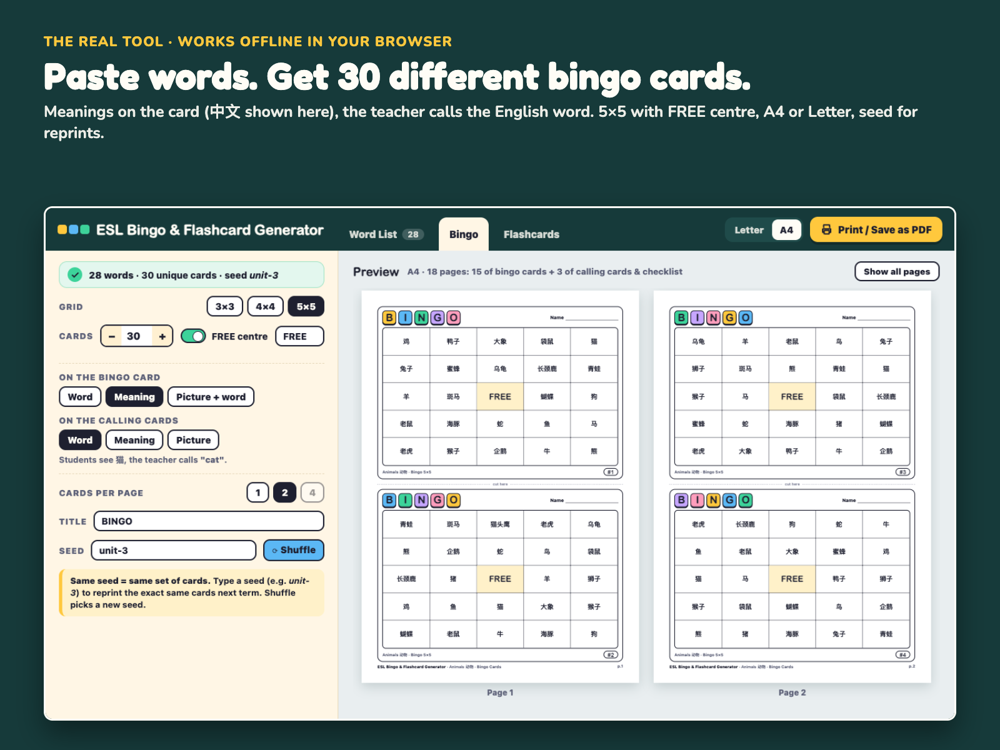
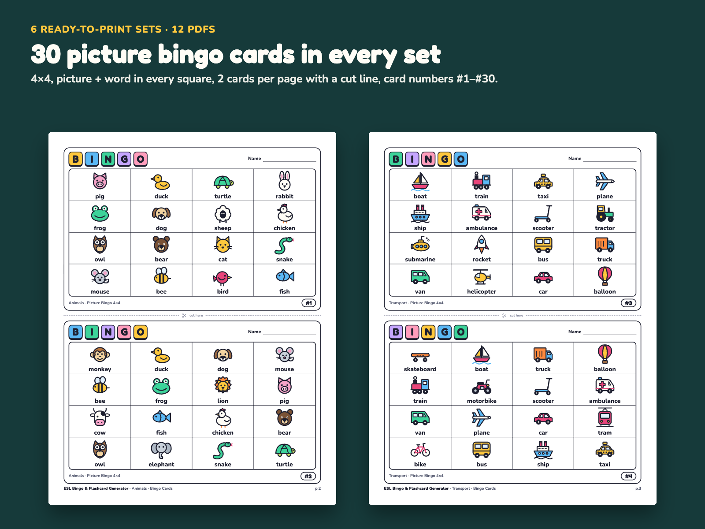
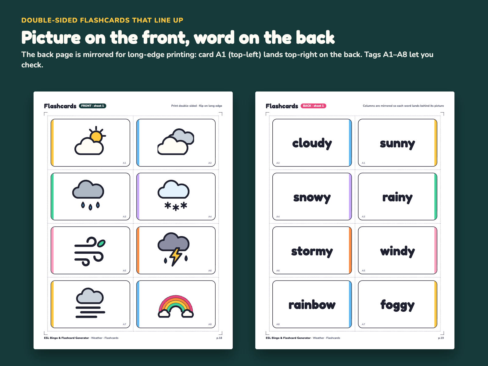
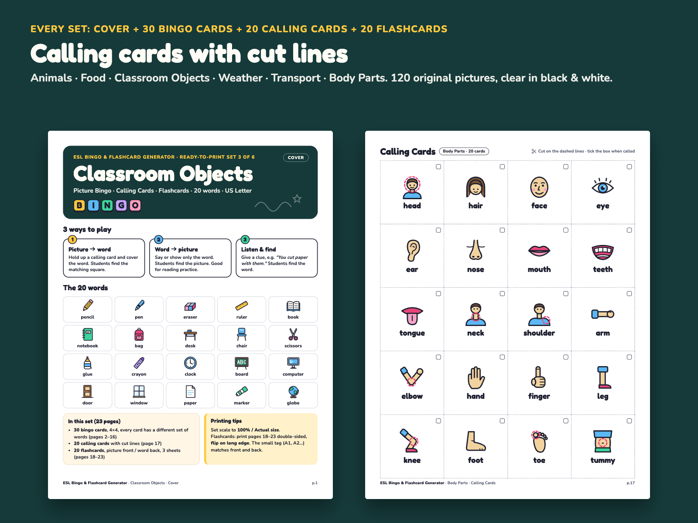
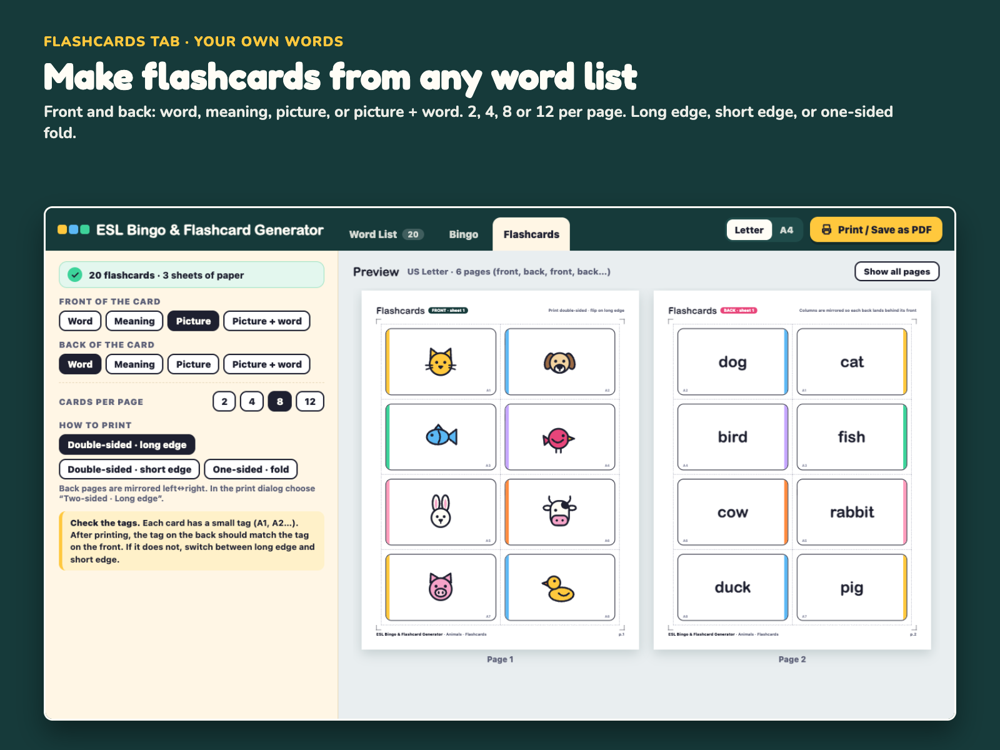
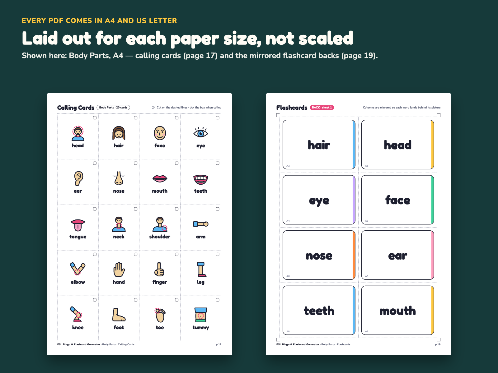

Paste your word list, print unique bingo cards, calling cards and double-sided flashcards — offline, in one HTML file. Plus 6 ready-to-print picture sets (12 PDFs, A4 & Letter).

$9.00 USD, one-time (no subscription)
Buy now: $9 Free printable sample14-day no-questions refund. Email us within 14 days of purchase and we refund you in full. You don't need to give a reason.
Print-or-it's-free guarantee. If the flashcard fronts and backs don't line up on your printer, or the generator won't open offline on your computer, and we can't fix it with you, you get a full refund.
Secure checkout. Payment is handled by Waffo Pancake, our merchant of record. We never see your card details. If your school or district needs a receipt or other paperwork for reimbursement, email us before or after you buy and we'll help.
This is a new product in a new shop, so there are no reviews yet, and we won't invent any. Instead, every picture below is a real page or real screenshot, and you can print a free sample before you pay.
The free sample is 5 real pages of the Animals set: page 1 (cover), page 2 (bingo cards #1 and #2), page 17 (20 calling cards) and pages 18–19 (flashcards sheet 1, front and back). It opens in your browser. Switch between A4 and US Letter, then click Print / Save as PDF. Print the two flashcard pages double-sided (flip on long edge) and hold the sheet up to the light. The A1–A8 tags should line up front and back. No email or signup needed.
Open the free sample (Animals, 5 pages)
The sample is built from the same source and layout as the paid PDF. In the paid ZIP each set is a ready PDF, sized for A4 or Letter.
Real screenshots of the generator and real pages from the included PDFs.






Most bingo and flashcard makers only work online. When the school Wi-Fi is down, the site is blocked, or students are not allowed to sign up, you are back to drawing tables in Word.
ESL Bingo & Flashcard Generator is a single HTML file that runs in your browser with no internet. Paste the words from your textbook — one per line, word = meaning — or load one of the 8 built-in sample lists. The word list is shared by all three tabs, so you paste once and make both bingo cards and flashcards.
Bingo tab. Choose a 3×3, 4×4 or 5×5 grid, a FREE centre (with your own FREE text) and 1–60 cards. Every card gets a different set of words, and each card has a number (#1, #2…) in the corner. Decide what students see on their card (word, meaning, or picture + word) and what is on your calling cards (word, meaning or picture). Example: students see 猫, you call "cat". Type a seed such as unit-3 and the tool makes the same cards every time, so you can reprint a lost card next term. Calling cards come with dashed cut lines and a checklist page. Long words shrink to fit, never below 9 pt.
Flashcards tab. Pick the front and back (word, meaning, picture, or picture + word) and 2, 4, 8 or 12 cards per page. For double-sided printing the back pages are mirrored for long-edge flip (or short-edge, if your printer works that way), and every card has a small tag so you can check that the front and back line up. No duplex printer? Fold mode prints front and back side by side.
Pictures. 120 original pictures are built in (6 themes × 20). Words that match a picture get it automatically. You can choose another one, or drag your own image file onto a word. Images stay on your computer.
Paper. Switch between US Letter and A4, then click Print / Save as PDF. The preview shows your pages at the real paper shape.
Ready-to-print sets. If you have no time, open one of the 12 included PDFs: each theme has a cover with 3 ways to play, 30 different 4×4 picture bingo cards, 20 calling cards and 20 double-sided picture/word flashcards. Each PDF is laid out for its own paper size (A4 or Letter), not scaled.
It uses the same word-list format as our ESL Offline Classroom Games Pack, so one .txt file works for both the projected games and the printed cards. Pay once, no subscription.
One download, ESL-Bingo-Flashcard-Generator.zip. After you pay, the download page also lists every file separately, so you can download single files too. Unzipped:
ESL-Bingo-Flashcard-Generator/
Bingo-Flashcard-Generator.html the generator (1 offline file)
LICENSE.txt single-teacher license
docs/
Quick-Start-A4.pdf 1 page
Quick-Start-Letter.pdf 1 page
ready-to-print/ 12 PDFs, 23 pages each
animals-A4.pdf animals-Letter.pdf
body-parts-A4.pdf body-parts-Letter.pdf
classroom-objects-A4.pdf classroom-objects-Letter.pdf
food-A4.pdf food-Letter.pdf
transport-A4.pdf transport-Letter.pdf
weather-A4.pdf weather-Letter.pdf
word-lists/ 8 lists (.txt, UTF-8)
animals.txt animals-zh.txt body-parts.txt classroom-objects.txt
food.txt food-ja-ko.txt transport.txt weather.txt
Bingo-Flashcard-Generator.html: the generator (one offline file, 3 tabs: Word List, Bingo, Flashcards; 120 built-in pictures; 8 built-in sample lists)ready-to-print/: 6 themes (Animals, Food, Classroom Objects, Weather, Transport, Body Parts) × US Letter and A4. Each PDF has 23 pages: 1 cover page, 15 pages of bingo cards (30 cards, 4×4, 2 per page, #1–#30), 1 page of 20 calling cards, 6 pages of flashcards (20 cards, 8 per page, front/back alternating)word-lists/: the 6 theme lists with 20 words and English meanings each, plus animals-zh.txt (Chinese meanings) and food-ja-ko.txt (Japanese · Korean meanings)docs/: 1 page each, US Letter and A4LICENSE.txt: single teacher licenseDoes it really work without internet?
Yes. It is one HTML file with everything inside. It makes no network requests and uses no cookies. Only your word list and settings are remembered in your own browser.
Which browsers?
It is a standard web page made for current Chrome, Edge, Safari and Firefox on Windows and Mac. Open it by double-clicking the file. The Quick Start explains the print settings (scale 100%, background graphics). Your word list and settings are kept in that browser's local storage, so before clearing the browser cache click Save project .json to keep a backup.
Will my school computer open a downloaded HTML file?
Usually yes: an .html file opens in the browser like a web page, with nothing to install. Some school computers block files downloaded from the internet. If yours does, the 12 ready-to-print PDFs still open in any PDF reader. And if the generator won't run on your computer and we can't fix it together, you get a full refund.
Can I use my own pictures?
Yes. Drag an image file onto a word in the Word List tab, or click the picture box and choose a file. Use Save project .json to keep your words, pictures and settings and open them on another computer.
Why can't I make 30 cards with 25 words on a 5×5 grid?
A 5×5 card with a FREE centre needs 24 words, and 25 words can only make 25 different sets of 24. The tool shows this and offers the maximum. Add a word or two (26 words make 325 different cards) or use 4×4.
Can I give the printed cards to my students?
Yes — print as many as you need for your own classes. Please do not share or resell the files themselves (see LICENSE.txt).
Can I get a receipt for my school or district?
Waffo Pancake, our merchant of record, processes the payment. If your district needs a receipt or other paperwork, email chenphien@gmail.com and tell us what they ask for.
What about support and updates?
Email chenphien@gmail.com and we reply within 2 business days. Bookmark your download page so you can download the files again. If we fix a bug in this version, email us and we'll send you the fixed file at no cost.
What if it doesn't work for me?
Email us within 14 days of purchase for a full refund, no questions asked (see Terms).
$9.00 USD, one-time
Buy now: $9Secure checkout by Waffo Pancake (merchant of record). Instant download after payment. Single-teacher license. 14-day no-questions refund.